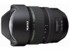

器材库 > 35mm画幅AF变焦镜头 > HD PENTAX-D FA 15-30/2.8ED SDM WR

详细规格
镜头类型
超广角变焦镜头
发布日期
2016-02-18
厂家推荐价格
250,000.00 （日元）
焦距
15mm-30mm
最大光圈
f/2.8
最小光圈
f/22
视角（对角）
111°-72°
镜头结构
18片/13组
非球面镜片
3片
低/超低色散镜片
3片
光圈叶片
9片
最近对焦距离
28cm
最大放大倍率
0.20
驱动马达
SDM（超声波马达）
镜头卡口
K/PK/KR
防抖
否
颜色
黑色
尺寸
98.5×143.5mm
重量
1040g
附件
镜头盖，镜头袋
备注
固定遮光罩；采用防滴结构。
kebu2017-12-30 19:394.67 分
操作性 5.00耐用性 5.00性价比 4.00解像力 5.00色彩还原 5.00机械结构 4.00
产品图 / 样片
HD PENTAX-D FA 15-30/2.8ED SDM WR